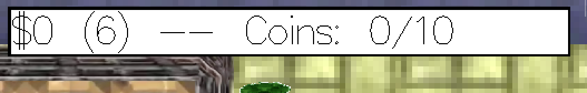

gta
GTA implemented in Haskell
Grand Theft Auto I (originally released in 1997, for MS-DOS/Windows).
You'll spawn in a beautifull city where you can walk and drive around. Next to you, other people are doing theire daily stuff and will move along you. Drivers are busy people, so watch out, they are able to kill you when they drive over you. It's your mission to find all the coins that are around to earn as much cash as possible. Cash can be earned as well by killing people by driving over them.
When you start the game, a begin-screen will pop up. This should explain the game once again. Everything is controlled by keys; S: Start game P: Pause game (brings you to the start-screen again) R: Restart level (resets player state, scores and location) C: Enter/exit nearby car (you need to be next to a car to enter it) Arrow keys: movement (controls your player in 4 directions)
Find all the coins before you're out of time, otherwise you're wasted as well. Indicators of the amount of cash you already earned, coins found, and time that's left can be found in the top of your screen while playing.
Top left of your screen: earned cash, cash highscore, found coins, total coins.
Our documentation should explain itself and our code. The documentation is devided in a few parts, as is our code. Each of them has a little description in it with additional information.
Modules
Minimal requirements
Player
The player can move using the arrow keys (left, right, up, down) and enter/leave cars. While being in a car you're able to kill people by driving over them and earn cash with it.
Enemies
The cars are your enemies, they'll drive over you when they can while you're looking for all the coins. Another enemy of yours; time. You should find all the coins before you ran out of time.Randomness
People and cars walk and drive around randomly; when a person/car needs to choose if it should go left, right or continue in its direction this is being done randomly.
Animation
Player, people, cars and coins all show their movements and states. The player and people walk, turn, and are able to die. Cars turn as well.
Pause
The player can pause the game using the P-key, which will bring you back to the startscreen.
Interaction with the file system
The world/city is loaded from a json file (configs/world.json). All the sprites are listed in a config file as well (config/sprites.txt), and the highscore is saved in another config file.
Optional requirements
Custom levels
Custom levels can be made by replacing the 'config/world.json' file with another JSON. These JSON's exist out of a few lists of objects e.g. cars, people and blocks. Each of these should furfill the required attributes as they are defined in the data-types. Good to know is that we've made our version of the in Adobe Illustrator and exported to JSON (https://github.com/bronzehedwick/Adobe-Export-Scripts). This one is converted to the exact JSON we want by a little script (ruby, recalc.rb). The AI-file of our world can be found in the config-files as well.
Complex graphics.
Graphics are loaded with the file-system from a list of sprites (configurable).
Use JSON to save information.
JSON is used for the format of our world as described above. It's implemented with the Aeson library.